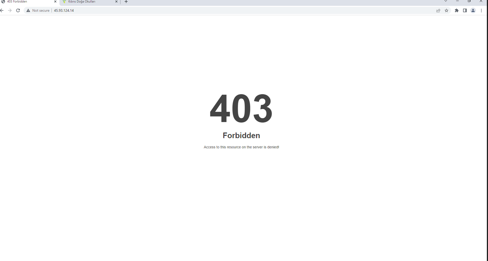
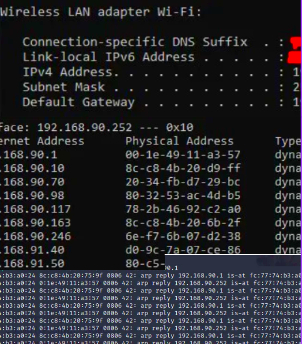
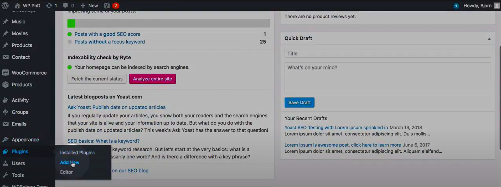
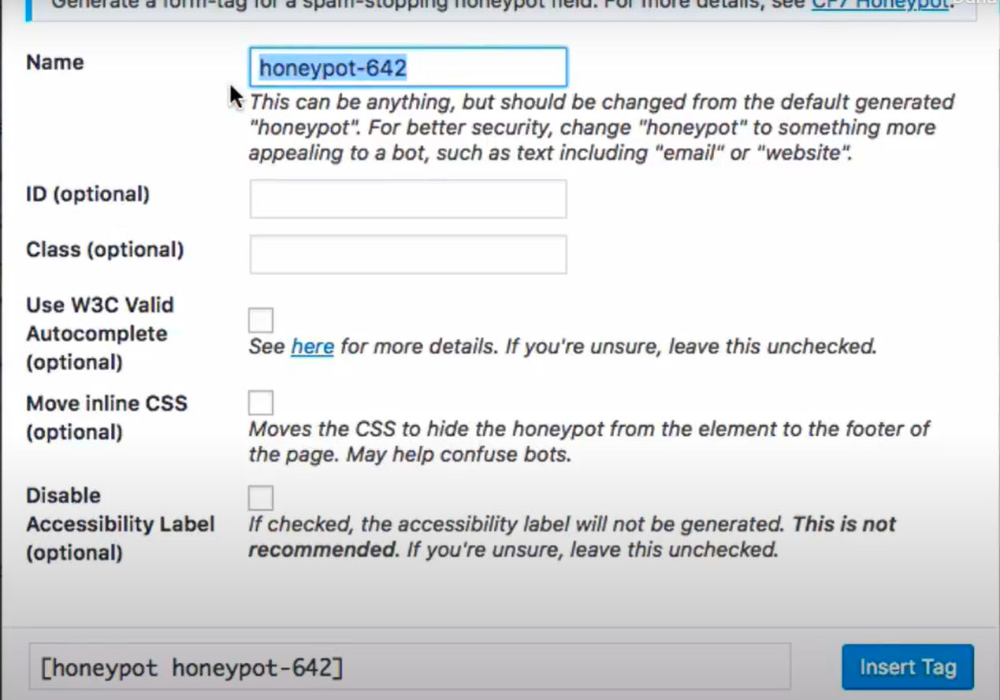
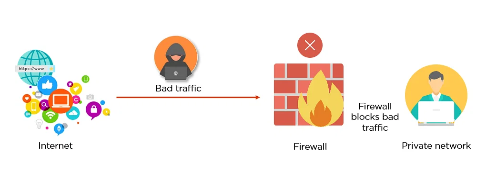
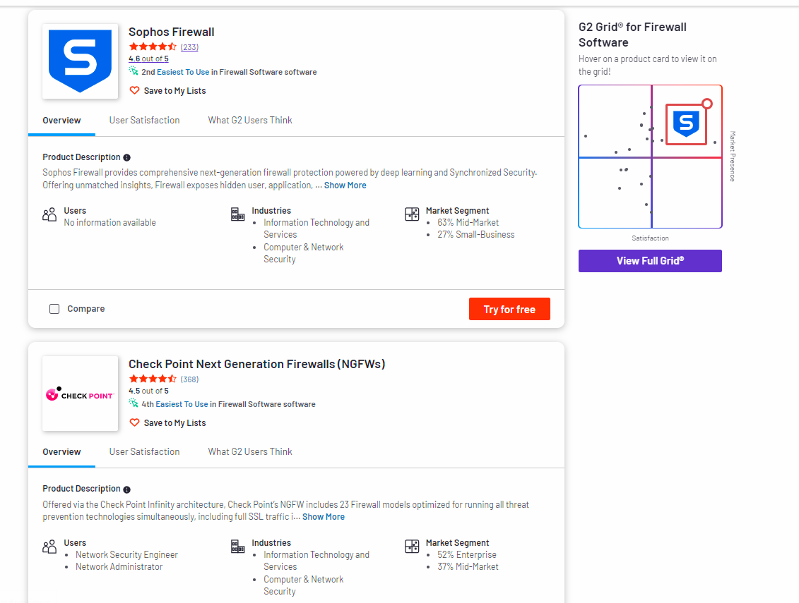
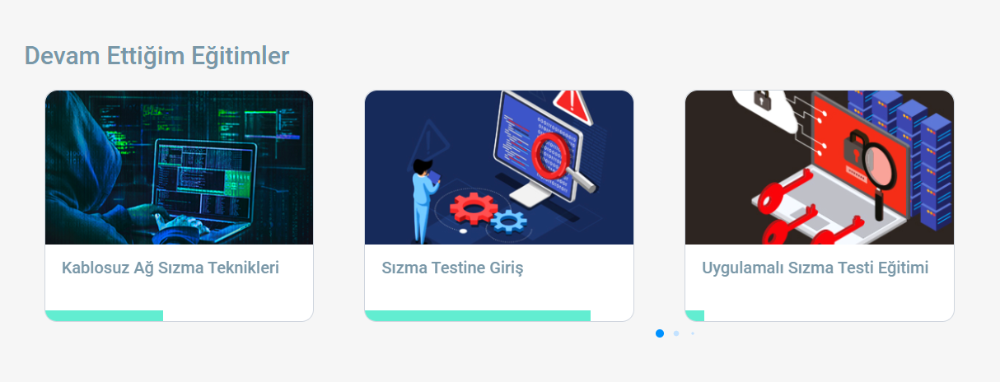
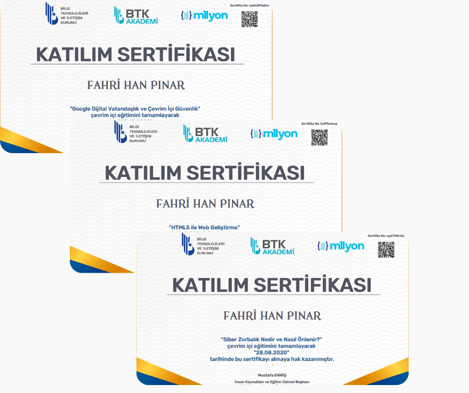

ACT-4
I want to talk about the "Dsniff". That helps me to analyze and examine the network traffic we can think it smelling the passwords and traffics. The demo of Dos Attacks we use it to analyze the network traffic. Firsly we need to install in Kali that tool , (apt-get install dsniff) after that we need a victim to attack. the other ip is can learn from the other pc with (ipconfig for windows) after that we need to control connected devices that ip with arp -a command (it helps to learn connected devices.) after that we need to control our network interface with ifconfig. Everythin is ready for our attack just we need to write arpspoof -i [your internet interface] -t [target IP address] -r [gateway IP address] if everything is successfull victim see on screen breaking connection. (We tried in our class for Doga Okulları)
I will explain the Dos Attacks. These attacks are very populer and not so hard to apply.
I said last activities about servers and clients. By using Dos Attacks we can increase the internet traffic of our target.
Let's suppose there is a server named x. Everything is normal traffic is normal. If somebody started Dos Attacks the traffic will grow up extremely
and client- server onnection will slow down even there can be accessing problems. Hackers use this tactic to slow and break the connection of target.
While i was searching i found some useful tools for this (named "dsniff").The goal is connects other devices to server and increase data traffic.

The other defense parth is tell lie hackers (i mean fake websites) The Honeypots. Eactly that is a way trick hackers.
Actually there is no a website there is fake interface similar websites. Attackers choose the target fake wbsites and
when they try to hack it their some informations save the fake websites dbs according to their informations victims can defense.
The main idea is telling lie and make believe hackers website interfaces. There are so many examples and types of Honeypots. While i am searching
i found a website Simple Cable you can check if you want there are s many types in it. I want to give an example
named "Formidable Honeypot" That is Honeypot of Wordpress (You can design websites with it) Formidable Honeypot is invisible for humans
that is for bots (Better automated attacks). To make active of honeypot is really easy on Wordpress.


Bots can not send a same messages. This Honeypot also can use to prevent for spams on e-mails!

The Firewalls are automatic safers against threats from network. It analyze the network traffic (pockets) If there is harmful pocket , data it burns it immidiatly. They have very diversity filtering method for malwares.(Pocket filtering) wE have these days NGFW Firewalls (Next Generated) They have deep filtering , proxy services and lot's of useful things.Focus on blocking malware and application-layer attacks. There are 76 firewalls on market are very populer. People can try for firewall-software 1 month. But the prices are expensive becuase of dolar situation. The reflection of me i do not pay any firewall because windows defender is enough. But Big companies must.

To improve my skills about firewalls and cybe security i attanded some programs about cyber security. These are really good programs and free for Turkey. There are lab sessions ,homeworks and update educations on it. You can find them on BTK AKADEMİ That made by government of Türkiye You can be registered with your e-devlet informations. Also i have some certifications from there (IOT) next activities i will share it. You can see the some of my certifications.

When you done the all of videos there is final test for every program if your grade will be +70 You can get the certificate